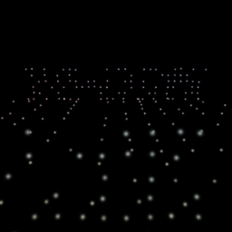
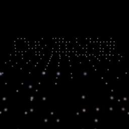

CloudAnalyzer / 3DGS Evaluation
Render a Gaussian Splat. Score photometric + geometry in one gate.
ca rendered-evaluate drives a 3DGS PLY through gsplat at nerfstudio
camera poses, then chains PSNR / SSIM / LPIPS with optional Chamfer / AUC / F1
against a reference scan. The bundled synthetic-room demo below is fully reproducible
from the repository — no external datasets required.
Sample renders (synthetic-room)
Reference views generated from gaussians_dense.ply via gsplat.


One-command regression check
pip install "cloudanalyzer[gs]" ca rendered-evaluate benchmarks/3dgs/synthetic-room/gaussians_dense.ply \ benchmarks/3dgs/synthetic-room/reference \ --cameras benchmarks/3dgs/synthetic-room/transforms.json \ --reference-pointcloud benchmarks/3dgs/synthetic-room/reference.pcd \ --metrics psnr,ssim,lpips \ --report rendered-report.html
What you get
PSNR / SSIMPhotometric fidelity per view
LPIPSPerceptual distance (optional [gs])
Chamfer / AUCGeometry QA vs reference scan
HTML reportCombined gate for CI / PR comments
- Camera poses: nerfstudio
transforms.jsonor COLMAP text exports. - Renderer: gsplat behind
pip install "cloudanalyzer[gs]". - Geometry-only path still available via
ca geometry-evaluate.